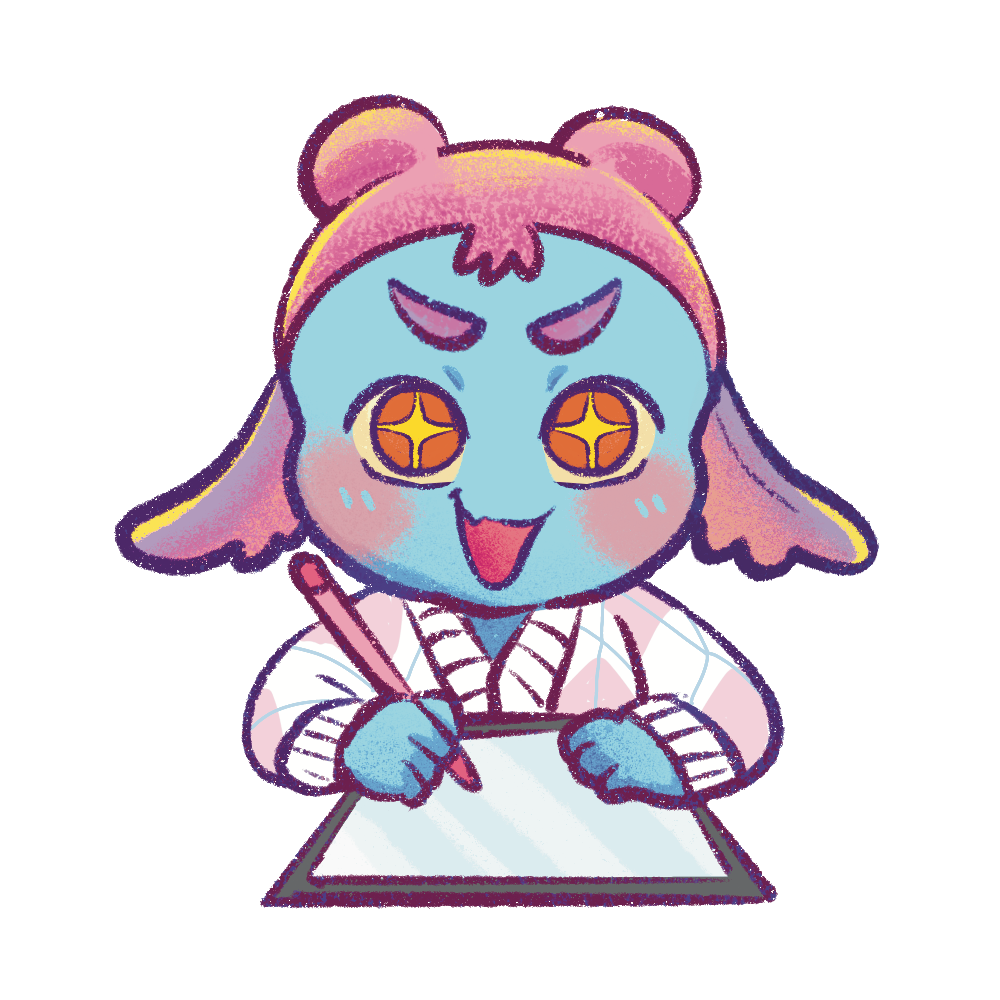

Avatar gambarmu, hidup saat kamu bicara.
Ingin tampil di live tanpa menunjukkan wajah, tapi malas berurusan dengan software animasi yang ribet? SmoothieTuber mengubah gambarmu jadi avatar 2D yang bergerak smooth mengikuti suara, langsung dari browser.

PNGTuber 2D yang jalan langsung di browser.
SmoothieTuber adalah web app untuk membuat avatar 2D yang bereaksi pada suara. Kamu cukup membawa gambar karaktermu. Saat kamu bicara, mulutnya ikut bergerak, dan kamu bisa berganti ekspresi kapan saja.
Tidak perlu memasang aplikasi atau punya skill animasi. Buka di browser, atur suaramu, lalu rekam videonya.
Semua yang kamu perlu, tanpa menu yang ribet.
Reaktif suara
Mulut avatar terbuka dan tertutup mengikuti volume mikrofonmu. Atur penguat, ambang batas, dan waktu tahan sampai pas.
Banyak emosi
Buat ekspresi sebanyak yang kamu mau, lalu ganti seketika dengan tombol pintas. Mata berkedip otomatis supaya terasa hidup.
Ekspor video
Rekam ke MP4, MOV, atau WebM transparan. Pilih rasio 9:16, 1:1, atau 16:9, dengan latar transparan atau green screen.
Rekam dengan caramu.
Pakai background dari galeri, rekam bersama kamera, atau import audio MP3 atau WAV. Kamu tinggal fokus memainkan ekspresi.
Dengan background
Unggah foto atau gambar dari galerimu, lalu pasang sebagai latar belakang avatarmu.
Dengan kamera
Rekam avatarmu bersama tampilan kamera dalam satu video.
Dengan audio MP3 atau WAV
Import file MP3 atau WAV, lalu fokus main ekspresi dengan hotkeys saat suara diputar dan direkam.
Tampil rapi di HP, monitor, dan feed.
HP, 9:16
Untuk TikTok, Reels, dan Shorts.
Monitor, 16:9
Untuk YouTube dan OBS.

Feed, 1:1
Untuk postingan persegi di feed.
Empat langkah, langsung jadi.
Masukkan kode akses
Setelah pembayaran, masukkan kode aksesmu di aplikasi.
Unggah avatarmu
Masukkan gambar avatar untuk mulut tertutup, terbuka, dan berkedip.
Kalibrasi suara
Nyalakan mikrofon dan atur sensitivitas sampai avatar merespons natural.
Siaran langsung atau rekam
Tampilkan avatarmu langsung di livestream lewat OBS, atau rekam jadi video untuk TikTok, Reels, dan Shorts.
Bingung belum punya desain avatar?
Komisi avatar ke salah satu illustrator di bawah ini, lalu hidupkan langsung di SmoothieTuber.
[Nama illustrator 1]
Illustrator avatar
[Nama illustrator 2]
Illustrator avatar
[Nama illustrator 3]
Illustrator avatar

Halo, saya Anin (Ukiran Anin)!
Children's Book Illustrator & Voice Over Creator
Saya suka bikin konten bercerita, tapi alergi banget tampil di depan kamera. Dulu saya capek sama aplikasi avatar yang berat, sering gagal instal, dan bikin laptop panas kayak kompor.
SmoothieTuber lahir dari keresahan saya sendiri: pengen punya karakter yang geraknya lembut, estetik, dan hidup ngikutin suara. Cukup buka browser di PC atau HP, tanpa instal apa pun.
Awalnya cuma buat saya pakai sendiri. Sekarang saya bagi buat kamu, sesama ilustrator dan kreator yang pengen karyanya lebih bernyawa.
Lihat aksinya langsung di TikTok @ukiran_anin
Avatar 2D bergerak dan bereaksi langsung mengikuti suara rekaman. Klik salah satu video di bawah untuk menonton langsung di TikTok!
Yuk, cobain SmoothieTuber dan hidupkan avatarmu.
Buka di browser, unggah avatarmu, lalu tampil di livestream atau rekam videonya. Tanpa instal, langsung bisa dicoba.
Cobain sekarangAvatar PNGTuber 2D yang hidup saat kamu bicara, langsung dari browser.